A complete walkthrough of GOS — a spatial prediction model built on the
geographical similarity principle, which borrows values from the observations whose
geographical configuration most resembles the unknown location, and from no others.
From the packaged Leonora trace-element data to a manuscript, with every number regenerable
by one command.
R/ pipeline scripts · config/project-config.R ·
run-all.R · tests/ · results/ · tables/ ·
env/ · a README.md. Unzip and run Rscript run-all.R test
from the GOS/ folder root. The input data are not in the archive — both
tables ship inside the geosimilarity package and step 1 writes CSV copies of
them for you.
Upload a sample CSV (and, optionally, a prediction grid), pick the response
and the covariates, and the app runs the same CRAN geosimilarity package compiled to
WebAssembly: the κ search, the GOS prediction, the uncertainty maps and an MLR/BCS/GOS accuracy
table, all downloadable as PNG, PDF and CSV. Nothing is uploaded to a server — the computation
happens on your device.
To cite the GOS model and its R package and codes in publications, please use:
Song Y (2023). Geographically Optimal Similarity.
Mathematical Geosciences 55:295–320.
doi ·
PDF
Song Y, Lyu W. geosimilarity: Geographically Optimal Similarity.
R package.
CRAN ·
vignette
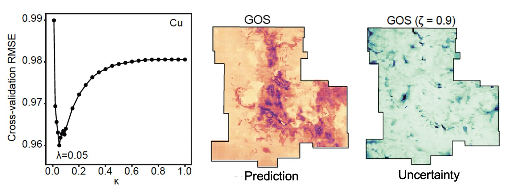
The whole method in one strip, from the published paper. Left: cross-validation
RMSE against the percentage threshold κ for Cu — steep fall, a minimum at λ = 0.05, then a slow
rise, which is the finding that using fewer but more similar observations predicts better.
Right: the GOS prediction and its uncertainty at ζ = 0.9 over the Leonora study area. Sections 3.2
and 3.4 rebuild all three panels for Zn from the packaged data.
Song (2023), Mathematical Geosciences 55:295–320 (open access).
1 Method Overview & Reproduction Scope
1.1 Core Idea
Most spatial prediction starts from distance. Kriging borrows from nearby samples; a
regression borrows from a fitted equation. The geographical similarity principle — the
Third Law of Geography — borrows from somewhere else entirely: similar geographical
configurations produce similar values, wherever they happen to be. Two sites 60 km apart
with the same terrain, vegetation, soil chemistry and distance to mining can inform each other
better than two adjacent sites that differ in all of them.
A geographical configuration is just the vector of covariate values at a location. Similarity
compares two such vectors directly — there is no regression coefficient anywhere in the model,
and no explicit relationship between response and covariates is ever estimated. That is the
point: the method describes the comprehensive degree of approximation of a geographical
structure instead of an explicit relationship between variables.
The earlier basic configuration similarity (BCS) model applies that principle by
averaging over every observation, weighted by similarity. GOS adds one idea and one
parameter: at each unknown location, keep only the most similar κ share of observations and
discard the rest. Observations with low similarity are not neutral — they are noise dressed up as
evidence, and averaging them in drags every prediction towards the study-area mean.
Research problem: similarity-based prediction uses all samples at every location,
so large data sets cost more to compute and predict worse, because unrelated
observations dilute the informative ones.
One-line contribution: a cross-validated threshold λ that selects, at each unknown
location, the small share of observations with optimal similarity — plus an uncertainty
measure read straight off the retained similarities.
Why it matters here: on the packaged Zn data, λ = 0.08 — 8 % of
885 observations, about 71 samples per cell — beats using all of them on MAE in
50 of 50 cross-validation splits, and lowers mean prediction uncertainty at
ζ = 0.9 by 67 %.
Published reference · GOS
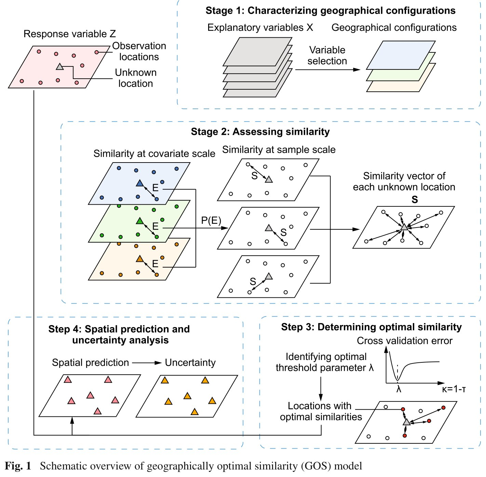
Paper Fig. 1 — the four stages this page follows. Stage 1 selects covariates
and turns them into a geographical configuration at every location, sampled and unsampled.
Stage 2 computes a per-covariate similarity E, composes them into a single
sample-scale similarity S with the operator P, and collects one similarity vector
S per unknown location. Stage 3 finds the threshold λ that minimises
cross-validation error and keeps only the observations above it — the red dots in the bottom
right panel. Stage 4 predicts and maps uncertainty. Note that no arrow in this diagram
carries a distance.
Song (2023), Mathematical Geosciences 55:295–320 (open access).
◆Reader anchor
Configuration = the covariate vector at a location → similarity = how closely two
configurations match, composed with a minimum operator → BCS averages over all of them →
GOS keeps only the best κ share, with κ chosen by cross-validation → and the similarity of
what was kept is the uncertainty. Everything on this page serves that line.
✓What you need
R 4.1+ and one CRAN package, geosimilarity. Nothing else: the figures are
base graphics, the tables are written by hand-rolled helpers, and both input tables ship
inside the package, so the pipeline never touches the network. A full run takes
107 seconds on one core — almost all of it cross-validation.
1.2 Method Logic
GOS runs in four stages, and each stage is a small number of equations. Equation numbers below
are the paper's, and every one of them is exercised by the pipeline in §3.
Stage 1Characterise the configuration Eq. 1 · correlation + VIF
Stage 1 — characterising the geographical configuration (Eq. 1)
Two screens, in order. First keep the covariates significantly correlated with the response;
then drop the most collinear one repeatedly until every variance inflation factor is under 4,
the paper's conservative threshold. What survives is the configuration:
(1)e = {ei}, i = 1, …, p
where ei is the value of covariate Xi at a given location.
The configuration must be computable at the unsampled locations too, which is what rules out
covariates you only measured at the samples.
Stage 2 — assessing similarity (Eq. 2–6)
For an unknown location vβ and an observation uα, each
covariate contributes its own Gaussian similarity, and the covariate-scale similarities are
composed into one number:
(2)S(uα, vβ) = P{Ei(ei(uα), ei(vβ))}
(3)Ei = exp[ −(ei(uα) − ei(vβ))² / 2(σ²/δ(vβ))² ]
(4)δ(uα, v) = √[ Σβ (e(uα) − e(vβ))² / n ]
Three details in there decide everything downstream. σ is the standard deviation of the
covariate over the observation and prediction locations together, so the scale is set by
the whole study area, not by the samples alone. δ is a root-mean-square deviation that
makes the Gaussian bandwidth adaptive rather than fixed. And P is the minimum operator —
the paper adopts Zhu et al.'s min, so a single badly matched covariate is enough to
make two locations dissimilar no matter how well the others agree. Similarity is a conjunction,
not an average.
Collecting the similarities of one unknown location against every observation gives a vector
(Eq. 5), and the similarity-weighted mean of the observed values is the BCS prediction:
(6)Ẑ(vβ) = ΣαS(uα, vβ) Z(uα) / ΣαS(uα, vβ)
Stage 3 — determining the optimal similarity (Eq. 7–10)
κ is the share of observations retained at each prediction location, defined as one minus the
quantile probability τ of the similarity vector:
(7)κ = 1 − τ, κ ∈ (0, 1]
κ = 1 keeps everything and is exactly BCS. For each candidate κ the observations are
split 50/50, the held-out values are predicted with Eq. 6, and the cross-validation error is
recorded; repeating the split many times and taking the minimum gives λ:
(8)RMSE = √[ (1/n) Σj (Ẑj − Zj)² ]
(9)λ = arg minκ RMSE(κ)
The similarity vector is then truncated to the observations above the corresponding similarity
threshold Sλ (Eq. 10). λ is a property of the data set, not of a location:
one number is searched once and used everywhere.
Stage 4 — prediction and uncertainty (Eq. 11–12)
The GOS prediction is the same weighted mean as Eq. 6, taken over the retained
observations only:
(11)Ẑ(vβ) = ΣαSλ(uα, vβ) Zλ(uα) / ΣαSλ(uα, vβ)
and the uncertainty is one minus a quantile of the retained similarities:
(12)Θ(vβ) = 1 − Q(Sλ(u, vβ), ζ)
with ζ ∈ {0.9, 0.95, 0.99, 0.995, 0.999, 1}. This is the model's most elegant move:
the uncertainty needs no error model and no second pass, because the quality of the evidence
is already in the similarities. At ζ = 1 the expression collapses to
1 − max(similarity) — "how good is the single best match?" — and at that setting GOS and
BCS give identical answers, since truncating the vector never removes its maximum. The pipeline
reproduces that identity exactly (§3.2, Step 4).
Published reference · GOS
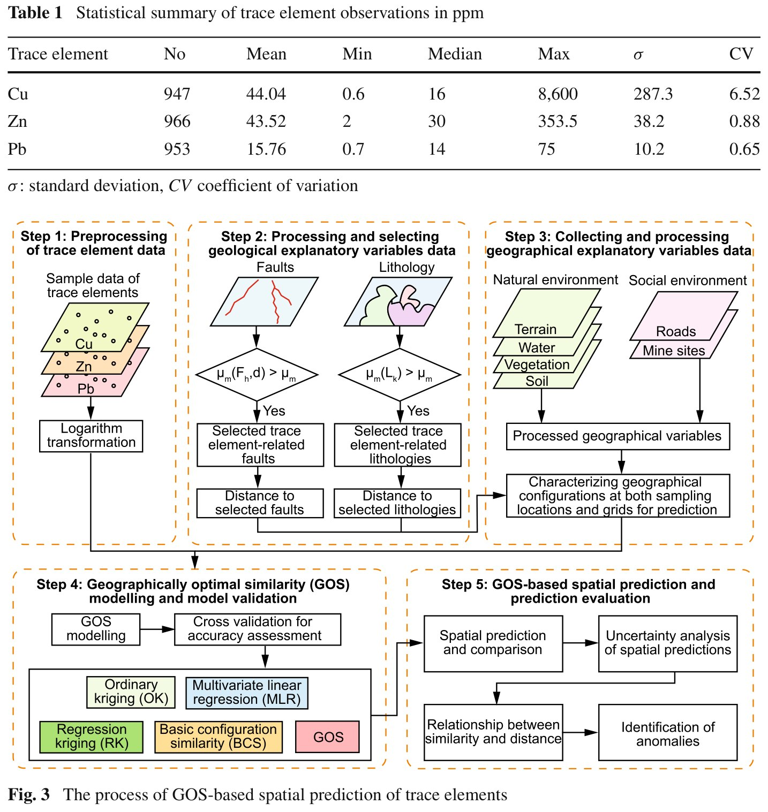
Paper Table 1 and Fig. 3 — the case study's five steps: preprocess the trace-element
data, build and select the geological variables, collect the natural and social variables,
fit and cross-validate GOS against four other models, then predict and evaluate. The tutorial
reproduces steps 1, 3, 4 and 5; step 2, the geological variables, is the part the packaged
data cannot supply (§1.3). Table 1 above the diagram is the published summary of the raw
Cu / Zn / Pb samples that §3.2 Step 1 rebuilds for Zn.
Song (2023), Mathematical Geosciences 55:295–320 (open access).
1.3 Reproduction Scope
Everything tagged Demo run regenerates from this folder with
Rscript run-all.R; everything tagged Published reference is a static image
from the article. The demo runs end to end on R 4.6.0 with
geosimilarity 3.9. Three things are worth stating plainly before any number
below is quoted.
!What this tutorial does not reproduce
The two geological covariates are missing. The paper's Table 2 selects nine
variables for Zn, and the two strongest are distance to Zn-related lithology
(R = −0.428) and distance to Zn-related faults
(R = −0.350), both derived from the Surface Geology of Australia. Neither
ships with the package. The packaged tables carry only the nine natural and social
covariates, of which the strongest here is NDVI at R = −0.398.
n = 894, not 966. The packaged zn table is a subset of the
Zn samples behind the published tables.
Three models, not five. The paper benchmarks GOS against ordinary kriging,
multivariate linear regression, regression kriging and BCS. This tutorial compares
MLR, BCS and GOS — the three that need no variogram, which keeps the whole
pipeline inside geosimilarity and base R. The two kriging rows of the
paper's Table 3 are not reproduced here at all, and no claim on this page rests
on them.
So the published Table 3 values do not reproduce digit-for-digit, and this page does
not pretend otherwise.
What does reproduce is the whole GOS estimation path and the qualitative findings: the
correlation-and-VIF screen (which lands on exactly the covariate set the package vignette uses),
the κ search of Eqs. 7–9 and its characteristic curve shape, the Eq. 11 prediction over
all 13,132 grid cells, the Eq. 12 uncertainty at all six ζ levels including the exact
GOS = BCS identity at ζ = 1, the collapse of BCS predictions towards the mean
that GOS avoids, and the accuracy ordering GOS < BCS < MLR on both MAE
and RMSE.
Item
Demo template
Published reference
Data
894 Zn samples and a 13,132-cell 1 km grid, 9 covariates each
(data(zn) and data(grid), shipped with the package)
966 Zn samples and 9 covariates including two geological distances, Leonora mining
region, Western Australia
Method
gos(), gos_bestkappa(), removeoutlier() from
the author's package
Song (2023) §2, Eqs. 1–12
Tables
results/response-summary.csv, variable-selection.csv,
kappa-rmse.csv, model-comparison.csv (+ a no-screening
variant)
paper Tables 1, 2 and 3 (Table 3 partially — MLR, BCS and GOS rows only)
Figures
fig01–fig06 from R/10 … R/50
paper Figs 1, 3, 4, 7, 9, 10, 11 embedded as reference images
Not attempted
—
ordinary and regression kriging (Table 3); the geological variable construction
(Fig. 5); the local singularity analysis of Eq. 14
What the template regenerates versus what is shown as published reference.
How to use this page
To reproduce the demo: run Rscript run-all.R test, then
Rscript run-all.R. Every number and figure below regenerates in under two
minutes.
To try GOS without installing anything: the
online GOS calculator runs the same CRAN package in your
browser, on this same example data or on a CSV of your own.
To use GOS on your own data: §2.3 gives the data contract — a sample table and a
prediction table sharing covariate columns — and §4.1 the porting steps.
2 Setup, Structure & Data Contract
2.1 Environment & Dependencies
This is the shortest dependency list in the series. The method is one CRAN package written by
the article's author; everything else is base R.
R console
# The method, and both input data sets
install.packages("geosimilarity")
Package
Role in the pipeline
Required?
geosimilarity 3.9
gos() for Eqs. 2–6 and 11–12, gos_bestkappa() for Eqs. 7–9, removeoutlier() for the screen, plus the zn and grid data
yes
base R graphics
all six figures, as PNG at 196 dpi and matching vector PDF
built in
car
cross-checks the base-R VIFs in step 2 whenever it is installed
optional — nothing depends on it
Package roles. VIFs use the identity VIFi = 1/(1 − R²i),
which is exactly what car::vif() returns for continuous main effects. That
equivalence is not taken on trust: the cross-check was run with car installed and
the two agree on all seven selected covariates to within 5 × 10⁻⁵, the rounding
of results/variable-selection.csv, and match the values the package vignette
reports. The verified pipeline session is recorded in env/session-info.txt:
R 4.6.0, aarch64-apple-darwin23, seed 42, one core.
2.2 Project Structure & Configuration
One entry script runs the five numbered steps, the table builder, or the tests. Each step
writes to results/, tables/, figs/ or
data/derived/ and reads what the previous step wrote, so any step can be re-run in
isolation after a configuration change.
folder tree
GOS/
├── gos.html # this guide
├── run-all.R # entry point: full run, single steps, tests
├── assets/ # figures shown in this guide (web copies)
├── config/project-config.R # the ONLY file to edit for a new domain
├── R/
│ ├── 00-config.R, 01-helpers.R # paths, IO, CV splits, base-R figure helpers
│ ├── 10-prepare-data.R # load zn + grid, log-transform, outlier screen
│ ├── 20-select-variables.R # correlation + VIF -> the configuration (Eq. 1)
│ ├── 30-best-kappa.R # the kappa search -> lambda (Eqs. 7-9)
│ ├── 40-gos-prediction.R # grid prediction + uncertainty (Eqs. 11-12)
│ ├── 50-model-comparison.R # MLR / BCS / GOS on identical CV splits
│ └── 90-tables.R # LaTeX tables + session info
├── data/ # written by step 10: verbatim CSV copies of the
│ # packaged zn and grid, plus provenance.md
├── tests/ # test-01 method properties; test-02 results regenerate
├── env/ # requirements.md, runtimes.csv, session-info.txt
└── results/ tables/ figs/ # generated output, never hand-edited
◆Where the data come from
There is no download step and no data file to fetch. R/10-prepare-data.R calls
geosimilarity::zn and geosimilarity::grid and writes verbatim CSV
copies into data/ so the inputs can be inspected without R. That is also why the
downloadable archive is 46 KB and contains no data/ folder — the data arrive
with the package.
Main configuration file
config/project-config.R is the single file a reader edits. It is read by
R/00-config.R and used by every step; nothing else in the pipeline hard-codes a
column name, a threshold or a palette.
config/project-config.R (key lines)
# -- 2. Input data -----------------------------------------------------------
RESPONSE <- "Zn" # the raw response column (ppm)
RESPONSE_LOG <- "logZn" # name given to the log-transformed response
LOG_TRANSFORM <- TRUE # paper Sect. 3.2, step 1
CANDIDATES <- c("Elevation", "Slope", "Aspect", "Water",
"NDVI", "SOC", "pH", "Road", "Mine")
# -- 3. Outlier screening ----------------------------------------------------
OUTLIER_COEF <- 2.5 # removeoutlier(): coef x IQR of the log response
# -- 4. Variable selection (paper Sect. 2.2.1) -------------------------------
COR_ALPHA <- 0.05 # keep covariates significantly correlated with y
VIF_THRESHOLD <- 4 # the paper's conservative multicollinearity limit
# -- 5. Optimal similarity threshold (Eqs. 7-9) ------------------------------
KAPPA_GRID <- c(seq(0.01, 0.10, 0.01), seq(0.2, 1.0, 0.1))
BESTKAPPA_NREPEAT <- 10 # cross-validation repeats inside gos_bestkappa()
BESTKAPPA_NSPLIT <- 0.5 # training share of each split
# -- 6. Model comparison (paper Table 3) -------------------------------------
CV_REPEATS <- 50 # the paper's 50 repeated 50/50 splits
CV_MODELS <- c("MLR", "BCS", "GOS")
# -- 7. Compute --------------------------------------------------------------
CORES <- 1 # one core: reproducible, and matches the web app
SEED <- 42
Parameter
Default
Origin / rationale
LOG_TRANSFORM
TRUE
the paper's step 1: trace-element data are right-skewed, so they are log-transformed before anything else
OUTLIER_COEF
2.5
the loose screen the package vignette documents. The paper deliberately keeps high values, so step 5 reports the comparison both ways
VIF_THRESHOLD
4
the paper's conservative threshold (§2.2.1); 10 is the permissive alternative
KAPPA_GRID
19 values
fine (0.01 steps) below 0.1 where the minimum sits, coarse (0.1 steps) above it where the curve is nearly flat
BESTKAPPA_NREPEAT
10
the paper's own illustration uses 10 repeated 50/50 splits
CV_REPEATS
50
the paper's Table 3 protocol; this is the knob to turn if the run needs to be faster
CORES
1
gos() can fork, but one core keeps the run reproducible and matches the browser app, which has no multiprocessing
Free parameters and the published choices they follow.
2.3 Data Contract
GOS needs two plain tables: the sample table, carrying the response and the covariates
at the observation locations, and the prediction table, carrying the same covariates
wherever you want a value. Neither needs to be a spatial object.
Column
Config key
In samples
In grid
Type
Meaning
response
RESPONSE
required
—
numeric, strictly positive if LOG_TRANSFORM
the variable being predicted (demo: Zn, ppm)
covariates
CANDIDATES
required
required, same names
numeric
the geographical configuration of Eq. 1; at least two must survive selection
Lon, Lat
—
optional
optional
numeric
used only to draw maps — never by the model
GridID
—
—
optional
any
carried through to the output so predictions can be joined back
Required schema. In the demo the sample table is 894 × 12 and the grid is
13,132 × 12, both written to data/ by step 1. Provenance and units are
documented in data/provenance.md.
Units, and why they matter less than you would think
In the demo, distances (Water, Road, Mine) are in
kilometres, Elevation in metres, Slope and Aspect in
degrees, NDVI and pH dimensionless, and SOC is a mass
fraction. Equation 3 divides every deviation by that covariate's own σ, so a covariate's
units cancel and rescaling one from metres to kilometres changes nothing. What does matter
is that a covariate be measured the same way in both tables — a sample column in metres against a
grid column in kilometres is a silent, catastrophic error the model cannot detect.
!Three contract rules that bite
No coordinate reference system is needed, or used. Similarity is computed from
covariates alone (Eqs. 2–4) — no distance matrix, no spatial weights, no
variogram. Projected or geographic, sorted or shuffled, the predictions are identical.
Coordinates are needed only to draw the result. The flip side is real: any
spatial structure not carried by a covariate is invisible to the model.
Standardisation depends on the prediction set. σ in Eq. 3 is computed over
observation and prediction locations together, and δ in Eq. 4 divides by the
number of prediction locations. So predicting a subset of your grid does not
give the same numbers as predicting all of it, and the results are not chunkable.
tests/test-02 re-predicts all 13,132 cells for exactly this reason.
NAs are not handled. A missing value in any covariate, in either table, raises an
error from the quantile step inside gos(). A missing value in the
response is worse: it propagates silently and every prediction comes back
NA. Complete your cases before you call the model.
Lon
Lat
Zn
Elevation
Slope
NDVI
SOC
pH
…
120.0523
−28.4551
10
455.3352
0.2360
0.1835
0.9092
5.9487
…
120.0554
−28.4145
30
450.5336
0.2073
0.2023
0.9061
6.0522
…
The first two rows of data/zn-samples.csv — 894 rows, the Zn response
in ppm and nine covariates (Aspect, Water, Road and
Mine elided here for width); the grid table has the same covariate columns plus
GridID. SOC and pH shown to four decimals; the CSV is verbatim.
3 Reproduction Pipeline, Results & Validation
3.1 Pipeline Execution
Full run
Rscript run-all.R — 107 s measured
Verification
Rscript run-all.R test — 42 checks, ~40 s. Do this first
Output folders
results/ tables/ figs/ data/
terminal
cd GOS # this folder
Rscript run-all.R test # 1. 42 checks on the method and on the committed results
Rscript run-all.R # 2. full pipeline
Rscript run-all.R 30 40 # re-run single steps (10 20 30 40 50 90)
3 models × 50 repeats, run twice, plus a second κ search, Fig. 6
64.9
90-tables.R
LaTeX tables and the session record
0.0
total
one core, R 4.6.0 on an Apple-silicon laptop
107.0
Measured wall-clock time, from env/runtimes.csv, written by the run
itself. Almost all of it is cross-validation; the two full-grid predictions together take about
ten seconds. CV_REPEATS is the knob if this needs to be faster.
Project : gos-zn
Domain : trace element (Zn) concentration, Leonora mining region, WA
== Step 1/5 Prepare data ======================================
zn: 894 samples x 12 columns
grid: 13132 prediction cells x 12 columns
outlier screen (coef = 2.5): 9 of 894 rows dropped, 885 retained
Shapiro-Wilk W on log Zn (screened): 0.9860
== Step 2/5 Select variables ==================================
VIF screen kept 7 of 7 covariates (max VIF 2.608)
selected: NDVI, SOC, Mine, Water, pH, Slope, Road
vignette: Slope, Water, NDVI, SOC, pH, Road, Mine
the two sets are identical
== Step 3/5 Optimal similarity threshold ======================
kappa grid: 19 values from 0.01 to 1.00, 10 repeats of a 50/50 split
lambda = 0.08 (cross-validation RMSE 0.6668)
RMSE at kappa = 1 (BCS) is 0.6729 — GOS lowers it by 0.91%
only 8% of the 885 observations are used at each prediction location
== Step 4/5 GOS prediction on the 1 km grid ===================
885 observations -> 13132 grid cells, kappa = 0.08
GOS predictions: mean 3.353, sd 0.365, range 2.396-4.302 (log Zn)
BCS predictions: mean 3.403, sd 0.138, range 2.396-4.075 (log Zn)
BCS spread is 38% of the GOS spread — the clustering the paper reports
at zeta = 1 the two models agree to 0.00e+00, as the paper notes
== Step 5/5 Model comparison ==================================
[screened] 885 samples, 50 repeats, 442 training / 443 testing rows each
MLR MAE 0.5456 RMSE 0.6865 GOS reduces MAE +5.8%, RMSE +4.2%
BCS MAE 0.5220 RMSE 0.6653 GOS reduces MAE +1.5%, RMSE +1.1%
GOS MAE 0.5140 RMSE 0.6578
RMSE ranking, screened : GOS < BCS < MLR
RMSE ranking, unscreened: GOS < BCS < MLR
Finished in 107.0 s
3.2 Core Analytical Steps
Six stages: purpose → code → output → result → how to read it. Steps 4 and 5 both come
out of R/40-gos-prediction.R; the rest map one-to-one onto the numbered scripts.
Step 1 · R/10-prepare-data.R
Prepare the response — log-transform, then screen
What this step does
Loads the two packaged tables, writes verbatim CSV copies of them, log-transforms the
response because trace-element data are strongly right-skewed, and applies
removeoutlier() to the transformed values. Both the screened and the
unscreened sample sets are kept, because the paper and the package vignette disagree about
whether to screen at all, and step 5 reports the comparison both ways.
Code
R — from R/10-prepare-data.R
zn <- as.data.frame(geosimilarity::zn) # 894 x 12, no download
grid <- as.data.frame(geosimilarity::grid) # 13,132 x 12
zn$logZn <- log(zn$Zn) # paper Sect. 3.2, step 1
out_idx <- geosimilarity::removeoutlier(zn$logZn, coef = 2.5)
d <- zn[-out_idx, ] # 885 rows retained
Example output
Series
n
Mean
Min
Median
Max
σ
CV
Zn, ppm — all samples
894
42.55
2
29
353.5
37.11
0.872
log Zn — all samples
894
3.436
0.693
3.367
5.868
0.801
0.233
Zn, ppm — outliers screened
885
41.64
5
29
181
32.95
0.791
log Zn — outliers screened
885
3.438
1.609
3.367
5.198
0.772
0.225
results/response-summary.csv, in the shape of the paper's Table 1.
The highlighted row is the sample set every later step uses. The paper reports 966 Zn
samples with mean 43.52, median 30, max 353.5, σ 38.2 and CV 0.88 — the same population
seen through 72 fewer samples, with an identical maximum.
Demo run
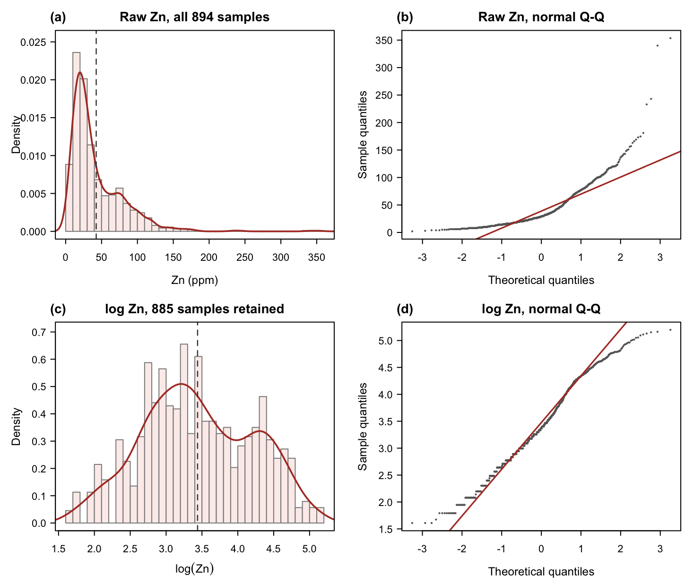
fig01 — the response before and after preprocessing: histogram with kernel
density (a) and normal Q-Q plot (b) of the 894 raw values in ppm, and the same two views
(c, d) of the 885 log values that survive the screen. Look at the Q-Q panels: the raw
data bend hard away from the line in the upper tail, the log values sit on it
(Shapiro-Wilk W = 0.986, skewness 0.04). Dashed lines mark the mean.Published reference · GOS
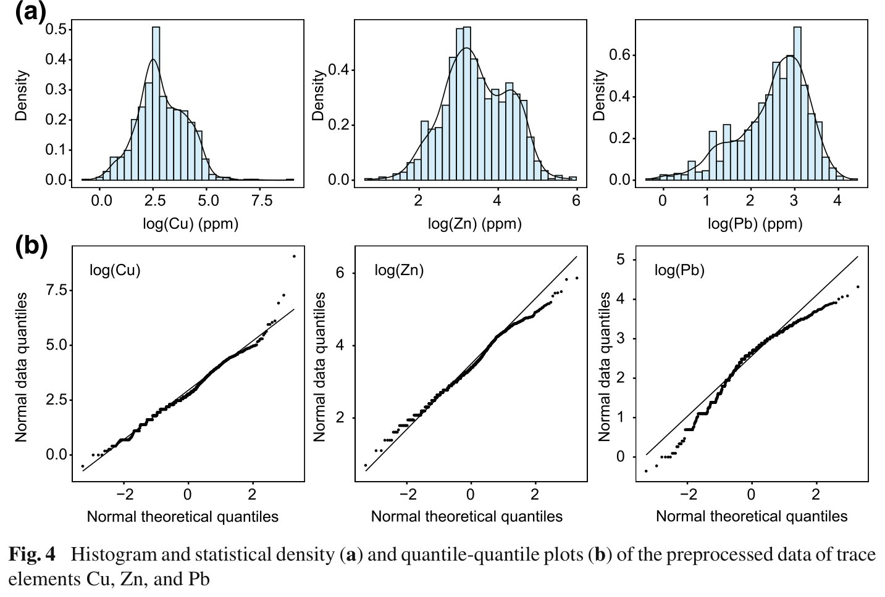
Paper Fig. 4 — the published counterpart, for all three trace elements. The
middle column is Zn: the same two-humped log density and the same near-linear Q-Q plot
the demo reproduces from the packaged subset.
◆How to read this result
The transform is doing the work, not the screen. The log takes CV from 0.872
to 0.233; the outlier screen then removes 9 rows and moves CV only from 0.233 to
0.225. Order matters — screening raw ppm values would have thrown away far
more.
The screen is a documented disagreement, not a default. The package vignette
applies removeoutlier(coef = 2.5); the paper explicitly does not,
because high trace-element values "may indicate the clusters of mineral deposits".
Rather than pick a side silently, step 5 runs the whole comparison on both sample
sets. The ranking is identical either way.
Everything downstream is in log units. The predictions, the MAE and the RMSE
are all log Zn. The back-transformed pred_zn_ppm column is a plain
exp(pred) with no smearing or lognormal bias correction — fine for
mapping, not for a mass balance.
Step 2 · R/20-select-variables.R
Characterise the geographical configuration (Eq. 1)
What this step does
Runs the paper's two-stage screen over all nine candidate covariates: keep those
significantly correlated with log Zn, then prune the most collinear one repeatedly until
every VIF is below 4. Whatever survives is the geographical configuration that every
similarity in Eqs. 2–4 is computed from.
Code
R — from R/20-select-variables.R
# stage 1 — correlation with the log-transformed response
ct <- stats::cor.test(d$logZn, d[[v]]) # for each candidate v
sig <- cors$variable[cors$p < 0.05]
# stage 2 — iterative VIF pruning at the paper's threshold of 4
pr <- vif_prune(d, sig, VIF_THRESHOLD) # VIF_i = 1 / (1 - R2_i)
selected <- pr$keep
Example output
Variable
r with log Zn
p
VIF
Selected
Also in vignette
NDVI
−0.398
5.4 × 10⁻³⁵
1.460
yes
yes
SOC
−0.317
4.7 × 10⁻²²
1.356
yes
yes
Mine
−0.259
5.4 × 10⁻¹⁵
2.608
yes
yes
Water
−0.244
2.1 × 10⁻¹³
1.232
yes
yes
pH
−0.241
3.8 × 10⁻¹³
1.568
yes
yes
Slope
+0.230
4.1 × 10⁻¹²
1.651
yes
yes
Road
−0.219
4.9 × 10⁻¹¹
2.273
yes
yes
Aspect
−0.055
0.0998
—
no — not significant
no
Elevation
+0.037
0.273
—
no — not significant
no
results/variable-selection.csv, in the shape of the paper's
Table 2. Seven of nine candidates pass the correlation screen and all seven survive
the VIF screen unchanged — nothing is dropped for collinearity, and the maximum VIF is
2.608 against the paper's 2.97 for Zn.
✓Checkpoint — the vignette's formula is not arbitrary
The seven selected covariates — Slope, Water, NDVI, SOC, pH, Road, Mine — are
exactly the set the geosimilarity vignette uses in its example
formula. Here they were arrived at from the data, by the paper's own screen, rather than
assumed. tests/test-02 asserts that equality, so if a future package version
changed the data the check would fail rather than quietly shifting every number on this
page.
◆How to read this result
These are weak correlations, and that is normal for this method. The
strongest is NDVI at −0.398; a linear model on all seven explains only a modest
share of log Zn. GOS does not need a strong marginal relationship, because it never
fits one — it needs covariates that jointly discriminate between locations.
Comparing it against MLR in step 6 is precisely a test of whether that distinction
is worth anything.
The screen is where the missing geology shows up. In the paper, the two
strongest Zn covariates are distances to Zn-related lithology (−0.428) and faults
(−0.350), and neither exists in the packaged data. The overlapping variables agree
closely with the published values — NDVI −0.398 vs −0.346, SOC −0.317 vs −0.312,
Water −0.244 vs −0.259, pH −0.241 vs −0.232, Slope 0.230 vs 0.233, Road −0.219 vs
−0.215 — so the difference is one of coverage, not of computation.
Aspect fails for a real reason. Aspect is circular: 359° and 1° are
neighbours that a Pearson correlation and a Gaussian similarity both read as
opposites. It would have needed a sin/cos decomposition to be usable, and the
screen drops it before that becomes a problem.
Step 3 · R/30-best-kappa.R · the parameter
Find the optimal similarity threshold λ (Eqs. 7–9)
What this step does
Scores 19 candidate κ values by repeated 50/50 cross-validation and takes the minimum. This
is the paper's actual contribution, reduced to one function call and one number.
Code
R — from R/30-best-kappa.R
f <- logZn ~ NDVI + SOC + Mine + Water + pH + Slope + Road
bk <- geosimilarity::gos_bestkappa(f, data = d,
kappa = c(seq(0.01, 0.10, 0.01), seq(0.2, 1.0, 0.1)),
nrepeat = 10, nsplit = 0.5, cores = 1)
lambda <- bk$bestkappa # 0.08
curve <- bk$cvmean # one mean RMSE per candidate kappa
Example output
Demo run
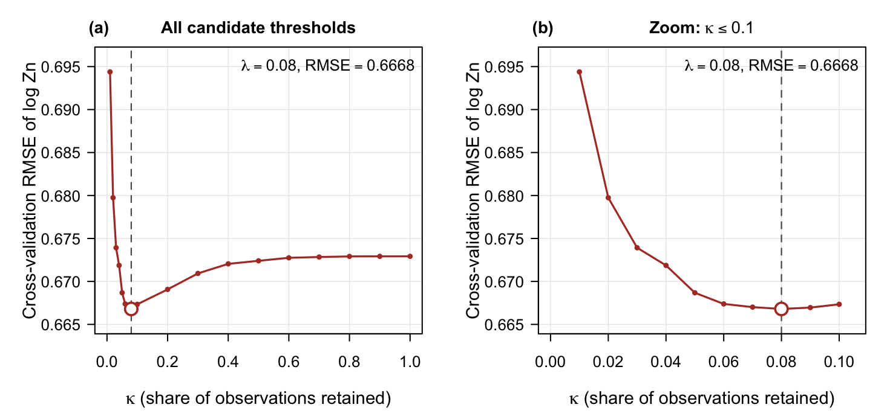
fig02 — cross-validation RMSE of log Zn against κ, averaged over 10 repeated
50/50 splits: the full candidate range (a) and a zoom to κ ≤ 0.1 where the grid
is finest (b). The open circle and dashed line mark λ = 0.08,
RMSE = 0.6668. Read the shape, not just the minimum: a steep fall as the first
few per cent of observations are added, a shallow trough, then a slow rise to a plateau at
κ = 1.Published reference · GOS
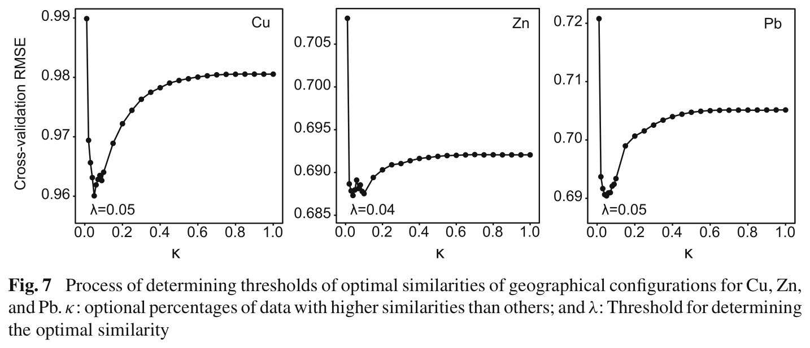
Paper Fig. 7 — the published curves for Cu, Zn and Pb. The middle panel is
Zn, with λ = 0.04. Same shape, same message, same order of magnitude; the demo's
0.08 differs because the configuration differs (§1.3).
κ
0.01
0.02
0.05
0.07
0.08
0.09
0.10
0.20
0.50
1.00
CV RMSE
0.6944
0.6797
0.6687
0.6670
0.6668
0.6670
0.6673
0.6691
0.6724
0.6729
Ten of the 19 rows of results/kappa-rmse.csv. λ = 0.08
with RMSE 0.6668; κ = 1, which is BCS, gives 0.6729, so choosing a threshold lowers
cross-validation RMSE by 0.91 %. Only 8 % of the 885 observations —
about 71 samples — contribute at each prediction location.
◆How to read this result
The left arm of the curve is the more interesting half. RMSE falls 0.6944 →
0.6668 between κ = 0.01 and 0.08 — nine samples per cell is too few, and
the prediction is unstable. The right arm rises only 0.6668 → 0.6729. Under-using
the data costs about four times as much as over-using it, which is worth knowing
before you pick a coarse κ grid.
The minimum is shallow, and you should say so. Between κ = 0.05 and
0.10 the RMSE spans 0.6687 to 0.6673 — a 0.2 % range. λ is not sharply
identified, and with a coarser grid or a different covariate set it moves easily.
That is exactly why the paper's 0.04 and this run's 0.08 are the same finding: only
a few per cent of observations are needed.
λ is deterministic.gos_bestkappa() seeds each repeat internally
(1…nrepeat), so every candidate κ is scored on identical splits and the
answer does not depend on the outer set.seed().
tests/test-01 asserts this by running the search twice under
deliberately different outer seeds.
κ = 1 is BCS, exactly. The last point on the curve is not an approximation of
the older model — it is the older model. That is what makes the comparison in
step 6 fair: one implementation, one code path, one parameter changed.
✓Try the κ search in your browser
The online GOS calculator runs this exact search — the same
CRAN geosimilarity package, compiled to WebAssembly — on the same example
data or on a CSV of your own, and draws this same curve with λ marked. No R installation,
nothing uploaded to a server. It is the fastest way to see how the curve reacts to a
different covariate set before committing to a pipeline run.
Step 4 · R/40-gos-prediction.R
Predict the grid, and map the uncertainty (Eqs. 11–12)
What this step does
One gos() call predicts log Zn at all 13,132 grid cells at
κ = λ = 0.08 and returns the Eq. 12 uncertainty at all six ζ levels in
the same tibble. A second call at κ = 1 produces the BCS counterpart used in step 5.
Together they take about ten seconds.
Code
R — from R/40-gos-prediction.R
g <- geosimilarity::gos(f, data = d, newdata = grid,
kappa = lambda, cores = 1)
# g holds: pred, uncertainty90, uncertainty95, uncertainty99,
# uncertainty99.5, uncertainty99.9, uncertainty100
b <- geosimilarity::gos(f, data = d, newdata = grid, # BCS, for step 5
kappa = 1, cores = 1)
Example output
Demo run
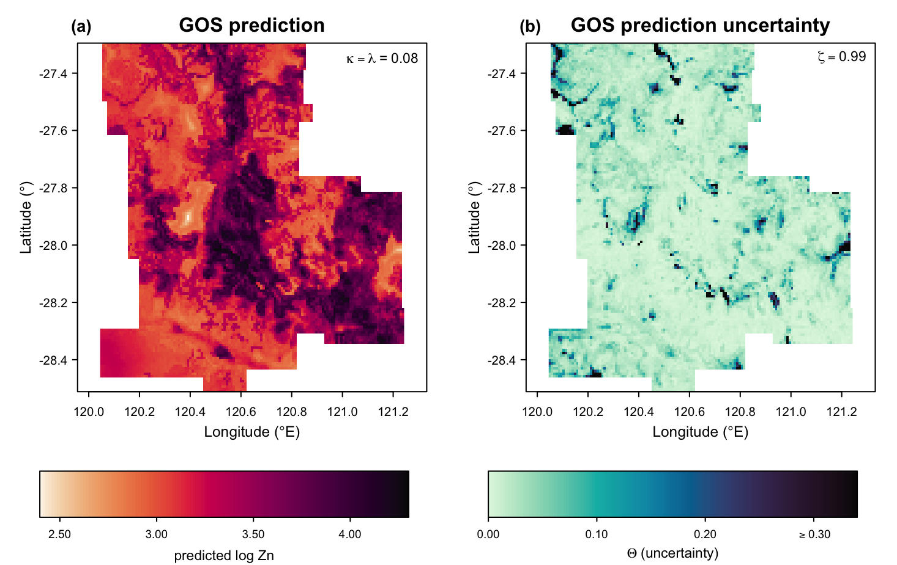
fig03 — the GOS prediction of log Zn at κ = λ = 0.08 (a) and
its uncertainty at ζ = 0.99 (b). Predictions run 2.40–4.30 in log Zn
(11.0–73.9 ppm back-transformed), and the map has sharp local contrast: a dark
north–south high through the centre of the study area against pale flanks. The uncertainty
map is nearly blank by contrast (mean 0.033) with dark filaments where no observation shares
the local configuration — those, not the prediction map, are the places to distrust. The
uncertainty scale is clipped at its 99th percentile, marked ≥, because a handful of isolated
cells reach 1.0 and a raw range would flatten the whole panel to one shade.
Demo run
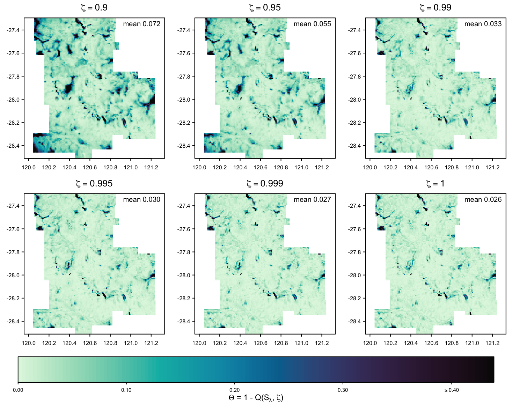
fig04 — the same uncertainty at all six ζ levels on one shared scale.
Uncertainty falls monotonically as ζ rises, from a mean of 0.072 at ζ = 0.9 to
0.026 at ζ = 1, while the pattern barely moves: the poorly matched places
stay in the same places. ζ is a strictness dial on the evidence, not a different
map.Published reference · GOS
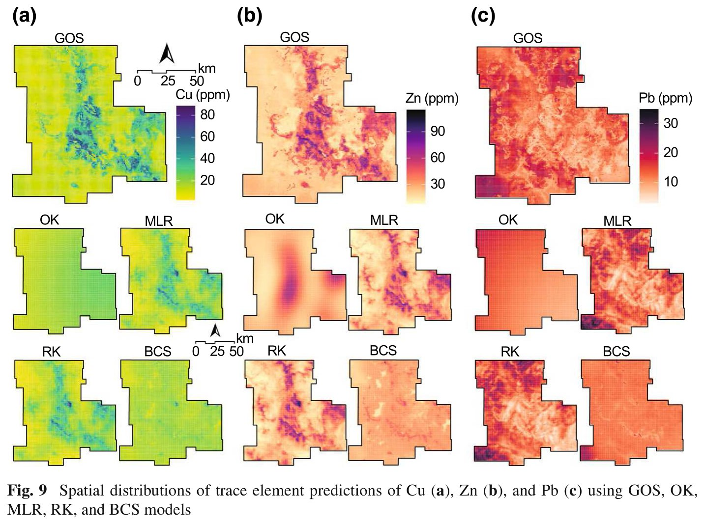
Paper Fig. 9 — published predictions for Cu (a), Zn (b) and Pb (c) from all
five models. Compare the large GOS panel with the small BCS panel below it in each
column: the same loss of contrast that fig05 quantifies here.
ζ
0.9
0.95
0.99
0.995
0.999
1
GOS mean Θ
0.0724
0.0545
0.0332
0.0295
0.0265
0.0258
BCS mean Θ
0.2203
0.1656
0.0801
0.0602
0.0351
0.0258
Reduction by GOS
67.1 %
67.1 %
58.5 %
51.0 %
24.5 %
0 %
Mean Eq. 12 uncertainty over the 13,132 cells, computed from
results/grid-prediction.csv and grid-prediction-bcs.csv. The paper
reports a 28.5–74.1 % reduction over ζ = 0.9 to 0.999; this run gives
24.5–67.1 % — same magnitude, same direction.
◆How to read this result
ζ = 1 is an exact identity, and it holds to machine precision. At
ζ = 1, Eq. 12 becomes 1 − max(similarity), and truncating a
vector never removes its maximum — so GOS and BCS must agree exactly even though
their predictions differ everywhere. The largest difference across all 13,132 cells
is 0.00e+00. That is a genuine test of the implementation, not a
coincidence, and tests/test-01 checks it on synthetic data too.
The gap between GOS and BCS shrinks as ζ rises, for a mechanical reason. At
ζ = 0.9, BCS's quantile falls in the long tail of poor matches it is
obliged to keep, so its uncertainty is triple. By ζ = 0.999 both models are
reading their few best matches, and the reduction collapses to 24.5 %. Report
the ζ you used, or the number means nothing.
Uncertainty here means "was there anything to learn from?", not a variance.
A cell can have a confident prediction with high Θ if it is simply unlike everything
observed. This is an extrapolation warning rather than a confidence interval, and it
is available at no extra cost because it falls out of the similarities already
computed.
!You cannot predict the grid in chunks
σ in Eq. 3 is computed over the observation and prediction locations together, and
δ in Eq. 4 divides by the number of prediction locations. Splitting
newdata into blocks therefore changes both, and the numbers drift. This is a
property of the method, not a bug: tests/test-02 re-predicts all 13,132 cells
from scratch rather than checking a sample of them, and thinning the grid would shift the
values slightly too.
Step 5 · R/40-gos-prediction.R · the clearest reproduced finding
Why the threshold matters — BCS collapses towards the mean, GOS does not
What this step does
Puts the κ = 1 prediction on the same colour scale as the κ = λ one, and
draws the distribution of all 13,132 predictions from both. Two views of a single fact.
Example output
Demo run
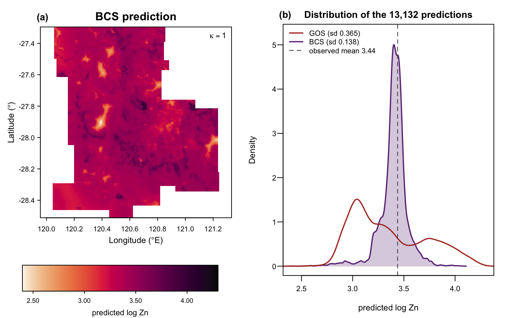
fig05 — the BCS prediction (a), drawn on the identical colour scale as the GOS
map in fig03, and the density of all 13,132 predictions from both models (b). The map has
lost its structure: what was a strong central high in fig03 is now a mottled mid-tone. The
density panel says why — BCS is a single narrow spike on the observed mean (dashed line),
GOS a broad multi-modal spread.
Prediction set
Mean
σ
Range (log Zn)
Range (ppm)
Within ±0.1 of the observed mean
GOS (κ = 0.08)
3.353
0.365
2.396 – 4.302
11.0 – 73.9
12.8 %
BCS (κ = 1)
3.403
0.138
2.396 – 4.075
11.0 – 58.8
70.0 %
Computed from results/grid-prediction.csv and
grid-prediction-bcs.csv. BCS's spread is 38 % of GOS's, and
70 % of its cells sit within ±0.1 of the observed mean of 3.438 against
12.8 % of GOS cells — a 5.5-fold concentration.
Published reference · GOS
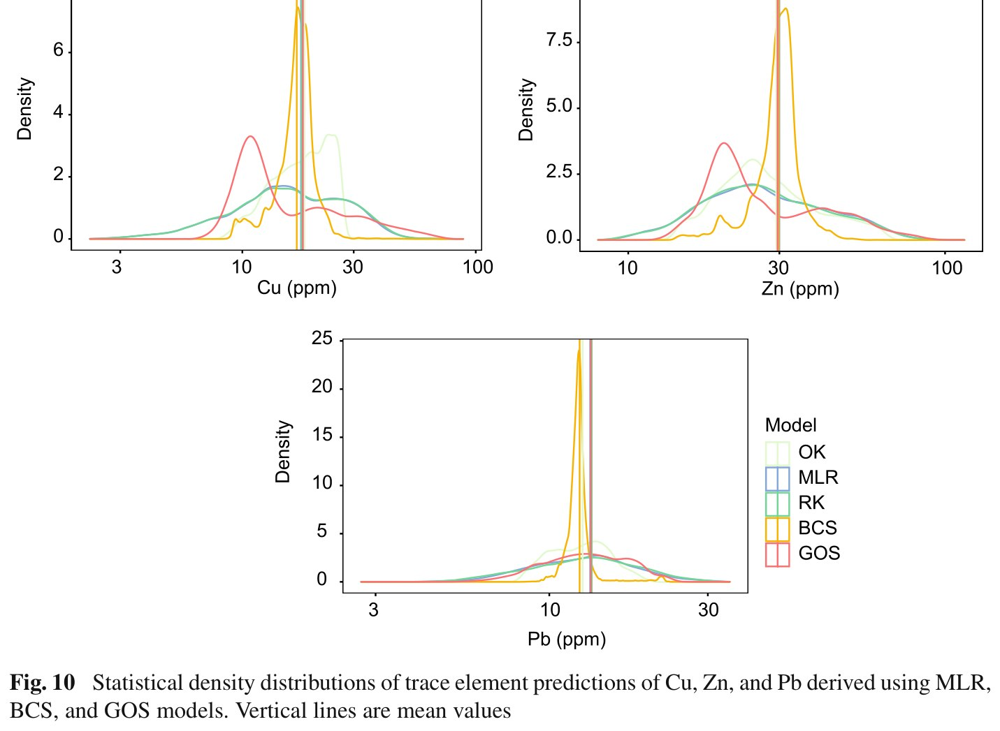
Paper Fig. 10 — the published counterpart: density distributions of Cu, Zn and
Pb predictions from all five models, with the vertical lines at the mean. The orange BCS
curve spikes on the mean in every panel while the red GOS curve stays broad. That is the
same fact, on the full data set, for all three elements.
◆How to read this result
This is the paper's Fig. 10 finding, reproduced cleanly and with no caveats.
Of everything on this page it is the most robust: it needs no cross-validation, no
accuracy metric and no held-out sample — it is visible in the predictions
themselves, on 13,132 cells.
Averaging over everything is a shrinkage estimator you did not ask for. Weight
885 observations by similarities that are mostly small and mostly similar to each
other, and the weighted mean converges on the unweighted one. The informative
observations are outvoted. Discarding 92 % of them is what restores the local
signal.
Both models share a lower bound. Both ranges start at exactly 2.396 — some
locations are dominated by the same single best-matching observation under either
rule. The divergence is at the top: BCS reaches 4.075 where GOS reaches 4.302, so
the high-Zn areas are precisely where BCS's dilution costs the most, and those are
the areas a mining study cares about.
Spread is not accuracy. A model could scatter its predictions wildly and be
worse. Step 6 is what closes that loop: the extra contrast comes with lower error,
not higher.
Step 6 · R/50-model-comparison.R
Accuracy comparison — MLR, BCS and GOS on identical splits
What this step does
Scores three predictors of log Zn over 50 repeated 50/50 splits, the paper's protocol.
Splits are generated once and shared, so every model sees exactly the same training and
testing rows in every repeat and the differences between models are paired rather than
merely averaged. The whole comparison is then run a second time on all 894 unscreened
samples, with λ re-derived for that sample set so GOS is not handicapped by a threshold
tuned elsewhere.
results/model-comparison.csv — 885 outlier-screened samples,
λ = 0.08, 50 repeated 50/50 splits, all errors in log Zn units. RMSE ranking
GOS < BCS < MLR. The paper reports, for Zn, GOS reducing MAE by 2.6 % and
RMSE by 0.9 % against BCS, and 6.0 % / 1.2 % against MLR: same direction, same
order of magnitude, with the MAE-against-MLR figure almost exact.
Demo run
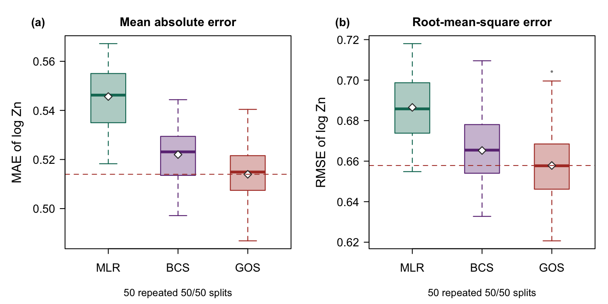
fig06 — MAE (a) and RMSE (b) over the 50 splits. White diamonds are the means
reported in the table, the dashed line the GOS mean. Note how much the boxes overlap:
split-to-split spread (sd ≈ 0.012 for MAE) is larger than the gap between BCS and GOS
(0.008), which is exactly why the models must be scored on identical splits and
compared pairwise.Published reference · GOS
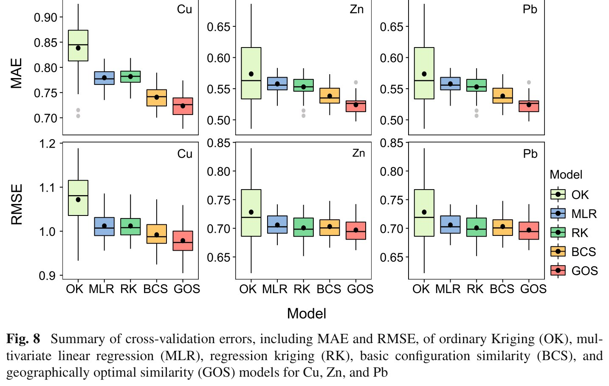
Paper Fig. 8 — the published counterpart, with five models rather than three:
ordinary kriging and regression kriging are the two columns this tutorial does not
reproduce (§1.3). The MLR, BCS and GOS bars are the ones being compared here.
Robustness — the paper's own preprocessing
The vignette screens outliers; the paper explicitly does not. Re-running everything on all
894 samples, with λ re-derived on that sample set (it comes out at 0.08 again), gives:
Model
MAE
sd
RMSE
sd
MAE reduction by GOS
RMSE reduction by GOS
MLR
0.5640
0.0130
0.7184
0.0168
5.66 %
3.69 %
BCS
0.5401
0.0150
0.6994
0.0185
1.48 %
1.08 %
GOS
0.5321
0.0136
0.6919
0.0185
—
—
results/model-comparison-no-outlier-screening.csv — 894 samples,
no screening, λ re-derived = 0.08, 50 repeats. Every error rises by roughly 0.02–0.03,
because the nine retained extremes are genuinely hard to predict, but the ordering
GOS < BCS < MLR and the size of GOS's advantage are unchanged. The
preprocessing choice does not carry the result.
✓Paired over the shared splits
Averages can hide a model that wins narrowly on most splits and loses badly on a few.
These do not. On the 885 screened samples, GOS has the lower error than MLR on
50/50 splits by MAE and 50/50 by RMSE, and than BCS on 50/50 by MAE
and 47/50 by RMSE. On the 894 unscreened samples: 50/50 and 50/50
against MLR, 49/50 and 47/50 against BCS. Counted from
results/model-comparison-repeats.csv, which holds all 300 per-repeat rows.
◆How to read this result
The GOS-vs-BCS gap is small, consistent and the point of the paper.
1.5 % MAE is not dramatic, but it is the same 1.5 % on essentially every
split, and it comes with a 92 % cut in the observations used per prediction and
the restored map contrast of step 5. Cheaper, sharper and slightly more
accurate.
The GOS-vs-MLR gap is what justifies the similarity framing. Both models see
exactly the same seven covariates. MLR insists on an explicit linear relationship;
GOS never estimates one, and still predicts better by 5.8 % MAE on all 50
splits. The comparative structure of a configuration carries information that a
fitted coefficient does not.
MAE gaps exceed RMSE gaps throughout. 5.81 vs 4.18 % against MLR, 1.54 vs
1.12 % against BCS. GOS's advantage is in typical accuracy rather than in the
worst cases — expected, since the hardest cells are the ones with no similar
observation anywhere, which is precisely what its uncertainty map flags.
What this comparison does not say. It says nothing about kriging, which is
not run here (§1.3). On these covariates GOS beats a linear model and beats
averaging over everything; whether it beats a geostatistical model on this data set
is a question this tutorial does not answer.
3.3 Reading the Results Together
A threshold exists, and it is small
λ = 0.08:
8 % of 885 observations per cell. Cross-validation RMSE 0.6668 against 0.6729 for
κ = 1.
It restores the map
GOS σ 0.365 vs BCS 0.138;
12.8 % of GOS cells near the mean against 70.0 % of BCS cells.
And it lowers error and uncertainty
MAE 0.5140
vs 0.5220 (BCS) and 0.5456 (MLR); mean Θ down 67.1 % at ζ = 0.9.
◆How to interpret — several angles
Mechanism. Similarity weights are strictly positive and mostly small, so a
weighted mean over all 885 of them is dominated by the crowd rather than by the
evidence. Truncating at λ turns a soft weighting into a hard selection, and only then
do the informative observations decide the answer. Everything else on this page —
the contrast in fig05, the lower error in fig06, the lower Θ in step 4 — is a
consequence of that one move.
The similar samples need not be nearby. Nothing in Eqs. 2–4 refers to a
coordinate. The 71 observations that predict a given cell are chosen for their
configuration, and may be scattered across the study area. That is the Third Law
working as advertised, and it is also why GOS can predict sensibly in a region with
few local samples but a well-represented environment.
Uncertainty is an extrapolation flag, not an error bar. Θ says "how similar was
the best evidence available here", not "how wrong is this number likely to be". Two
cells with the same prediction can have very different Θ, and it is the high-Θ ones
you would sample next.
Honest limits. The configuration is everything: any driver you did not measure
is invisible, and GOS cannot recover it from geometry the way a kriging model can,
because it never looks at geometry. λ sits in a shallow trough here (0.2 % RMSE
across κ = 0.05–0.10), so report the curve rather than the single number.
The comparison covers three models, not the paper's five. And the back-transform to
ppm is naive.
What would falsify the method on your data. A κ–RMSE curve that decreases
monotonically to κ = 1. That would say no threshold helps and BCS is the
right model — a perfectly publishable finding, and one this pipeline reports without
complaint.
◆Reading order for your own run
1) results/variable-selection.csv — did anything survive both screens, and is
the maximum VIF under 4. 2) figs/fig02 — does the κ curve have a minimum away
from 1, and how shallow is it. 3) figs/fig05 — does thresholding restore contrast
your BCS map had lost. 4) results/model-comparison.csv together with
model-comparison-repeats.csv — is GOS ahead on average and on most splits.
5) figs/fig03 panel (b) — where is the model extrapolating, and does that match
where your sampling is thin.
3.4 Validation
Rscript run-all.R test runs two scripts and 42 checks in about 40 seconds.
They test different things, and it is worth knowing which is which.
Script
Checks
What it establishes
tests/test-01-method-properties.R
18
Properties the method must have regardless of dataset, on a small synthetic
case with no spatial structure at all — which is legitimate precisely because the model
never uses coordinates.
tests/test-02-reproduce-pipeline.R
24
That the committed CSVs regenerate. It repeats the expensive parts of steps 30–50
from scratch and compares against what is in results/.
Together they guard against two different failures: a wrong implementation, and a
silently drifted result.
What test-01 pins down
Eq. 6 is transcribed and matched exactly. The test writes out Eqs. 2–6 by hand —
the Gaussian Ei, the σ over observation and prediction locations together,
the δ normalisation as the package computes it, the min operator, the weighted
mean — and compares it with gos(kappa = 1). Maximum difference:
0.0e+00. That single check verifies the minimum-operator composition and the
Eq. 6 weighted mean at once.
Eq. 12 behaves like a probability. All six uncertainty columns present, all values in
[0, 1], non-increasing in ζ, and ζ = 1 the smallest of the six — with GOS and
BCS identical there.
Eq. 9 is deterministic.gos_bestkappa() is run twice under deliberately
different outer seeds and must return the same λ and the same curve to 10⁻¹².
Scale equivariance and range. Shifting and scaling the response shifts and scales
every prediction identically, and predictions never leave the observed range — both
necessary consequences of a weighted mean with positive weights.
The helpers. The base-R VIF matches 1/(1 − R²), and the split generator is
reproducible, disjoint, correctly sized, and refuses a degenerate split.
What test-02 pins down
The packaged zn still holds 894 rows and the screen still retains 885 — so a
package update that changed the data would fail here rather than silently rewrite this
page.
All nine correlations, the seven selected covariates (asserted equal to the vignette's set),
and their VIFs.
λ reproduces as 0.08 and the whole 19-point κ–RMSE curve matches to 10⁻⁶.
All 13,132 grid predictions match to 10⁻⁶ and the ζ = 0.99 uncertainties to 10⁻⁷ —
re-predicting the entire grid, because a subset would legitimately differ.
Three cross-validation repeats reproduce for all three models to 10⁻⁸, the summary table
averages its own per-repeat file, and GOS beats BCS and MLR on both metrics in both
preprocessing variants.
✓Checkpoint
42 checks pass — 18 on properties the method must satisfy on any data, 24 on the committed
results regenerating. If those hold, you are running the reference implementation as its
author intended, and every number on this page is reachable from your own machine.
4 Adaptation, Writing & Reproducibility
4.1 Port to Your Domain
GOS needs no geometry, no neighbourhood and no variogram, so it travels further than most
spatial methods: anywhere you have a response measured at some locations, and covariates measured
everywhere. Soil properties, air quality, species abundance, house prices, disease incidence —
the contract in §2.3 is the whole requirement.
What to edit
config/project-config.R — RESPONSE, and
LOG_TRANSFORM if your response is right-skewed and strictly positive (check
fig01 for your own data before deciding).
CANDIDATES — every covariate available at both the samples and the
prediction locations. Step 2 whittles the list down; you do not have to pre-select.
KAPPA_GRID — keep it fine below 0.1, where the minimum usually sits, and coarse
above. If your first run puts λ at the smallest grid value, extend the grid downwards
before believing it.
CV_REPEATS — 50 is the paper's protocol and costs about a minute here. Lower it
while iterating, restore it for the run you report.
Nothing else. Rscript run-all.R test, then Rscript run-all.R.
Choosing covariates
The configuration is the model. Three rules that follow from Eqs. 2–4 rather than from
taste:
Availability at the prediction locations is the binding constraint. A covariate you
measured only at your samples is useless to GOS, however predictive. This is why remote
sensing, terrain and distance-to-feature layers dominate every published configuration.
Because P is the minimum, more is not better. Every added covariate can only lower
each pairwise similarity, never raise it. A weak covariate does not dilute the signal the
way it would in a regression — it actively suppresses matches. Let the VIF and correlation
screens do their job, and prefer a compact configuration.
Prefer covariates that carry the spatial structure you cannot otherwise use. The
model never sees coordinates, so anything smooth in space that drives your response — a
geological unit, a distance to a river, an elevation band — has to enter through a
covariate or not at all. In the paper, the two strongest Zn covariates were distances to
related lithology and faults, which are exactly such fields; their absence from the
packaged data is the main reason this reproduction differs from the published one.
Watch for circular and categorical variables. Aspect is dropped by the screen here,
and rightly: a Gaussian on degrees treats 359° and 1° as far apart. Decompose it into
sin/cos, or leave it out. Unordered categories have no meaningful squared difference at
all.
What κ means for your sample size
κ is a share, so the number of observations actually used is κ × m — here
0.08 × 885 ≈ 71 per prediction. That has two consequences worth planning
for.
Sample size m
What to expect of λ
Practical note
small (m ≲ 100)
large, often approaching 1
with 100 samples, κ = 0.08 leaves 8 observations — too few to be stable. The left arm of the curve in fig02 is exactly this failure mode. GOS may collapse to BCS, which is a legitimate answer
moderate (m ≈ 500–2,000)
a few per cent, as here
the regime the paper studies; the curve has a clear minimum and a shallow trough around it
large (m ≫ 5,000)
small, and the computational gain is the point
this is the case the paper opens with: BCS's cost grows with every added sample while its accuracy falls. Thresholding fixes both
κ is a proportion, so the same κ means very different amounts of evidence at
different sample sizes. Read λ together with κ × m.
✓When BCS is enough — and how to tell
Run the κ search first and look at the curve. If RMSE decreases monotonically to
κ = 1, there is no optimal threshold on your data and BCS is the correct model —
report that. If the minimum is real but the trough is very shallow, as it is here
(0.2 % across κ = 0.05–0.10), λ is weakly identified: quote the curve, not just
the number. And if your sample is small enough that κ × m is under about 20, the
threshold is buying you noise. The
online GOS calculator is the quickest way to answer this: load
your CSV, run the κ search, and look at the shape before writing any pipeline code.
!Common pitfalls
Report λ, the κ grid it was searched over, the number of repeats, and ζ — a Θ value without
its ζ is meaningless, and a λ without its grid cannot be checked. Make sure a covariate is
measured identically in both tables; the model cannot detect a unit mismatch. Do not predict
your grid in chunks or thin it after tuning, because σ and δ depend on the prediction set.
Complete your cases: covariate NAs error out, response NAs return all-NA
predictions in silence. Keep errors in the transformed units you modelled in, and treat any
back-transform as presentational. And do not tune λ on the same split you report accuracy on
— the pipeline derives λ once, then scores on 50 fresh splits.
4.2 Write the Paper
The published study has a clean architecture, and it is worth copying: define the four stages,
characterise the configuration, show the threshold search, then predict, quantify uncertainty and
benchmark.
Manuscript section
Template output
Writing job
Methods
config/project-config.R, Eqs. 1–12 as set out in §1.2
state the similarity function and that P is the minimum operator; define κ and ζ; say how λ was searched — grid, repeats, split ratio — and that it was derived once and reused
the response and its transform, the candidate covariates and where each comes from, and the fact that every covariate exists at the prediction locations
the table, and the paired win counts — averages alone under-sell a consistent small margin
Discussion
the no-screening variant, §3.3
the mechanism, the limits of a covariate-only model, and one robustness variant of your own preprocessing
Where each manuscript section draws its material from.
Manuscript skeleton
manuscript outline
1 Introduction — spatial prediction from similarity, not distance;
BCS uses every sample; the gap: which samples,
and how uncertain (3 aims)
2 Geographically optimal similarity
— 2.1 Characterising configurations (Eq. 1)
2.2 Assessing similarity (Eqs. 2-6; P = min)
2.3 The optimal threshold (Eqs. 7-10)
2.4 Prediction and uncertainty (Eqs. 11-12)
3 Case & data — study area, response and transform, covariates,
availability at the prediction locations
4 Results — 4.1 the selected configuration (correlation, VIF)
4.2 the kappa curve and lambda
4.3 prediction map
4.4 uncertainty across zeta
4.5 GOS against BCS: spread and accuracy
4.6 accuracy comparison, paired over splits
5 Discussion — why fewer samples predict better; what the
uncertainty does and does not mean; limits of a
covariate-only configuration
6 Conclusions — 6-8 sentences answering the aims
Results-to-manuscript map
Manuscript element
Source file
Shown in
Response summary and transform
tables/table-response-summary.tex, figs/fig01
§3 / §4.1
Configuration table
tables/table-variable-selection.tex
§4.1
Main figure (the κ curve)
figs/fig02, results/kappa-rmse.csv
§4.2
Prediction and uncertainty maps
figs/fig03, figs/fig04
§4.3 / §4.4
BCS contrast
figs/fig05
§4.5
Main table (accuracy)
tables/table-model-comparison.tex, figs/fig06
§4.6
Robustness variant
tables/table-model-comparison-no-screening.tex
§5 / supplement
Every manuscript element traces to one regenerable file.
4.3 Final Reproducibility Package
Code
numbered scripts in R/ + run-all.R + config/project-config.R + tests/
Data
data(zn) and data(grid) from geosimilarity 3.9, with data/provenance.md and the CSV copies step 1 writes
run-all.R, config/project-config.R, all eight scripts in
R/, both scripts in tests/, six CSVs in
results/, four LaTeX tables in tables/, all of
env/, and a README.md — 26 files in seven folders
data/, because both input tables ship inside the
geosimilarity package and step 1 writes CSV copies of them on the first
run; the two grid-prediction CSVs (~1.5 MB each), which step 4 regenerates in ten
seconds; and figs/, since every figure is redrawn by the step that owns
it and the rendered versions are on this page
The archive is 46 KB because the data are a package dependency rather than a
file, which is also what makes this pipeline network-free.
✓Before claiming reproducible
Rscript run-all.R test passes — 42 checks, including
gos(kappa = 1) against a hand transcription of Eqs. 2–6 at
0.0e+00.
Delete results/, tables/, figs/ and
data/derived/, re-run Rscript run-all.R — every number and
figure on this page regenerates (~107 s).
λ, the κ grid, the number of repeats, the split ratio and the ζ you report are stated in
the manuscript and match config/project-config.R.
The exact geosimilarity version is named. gos()'s δ
normalisation is an implementation detail of the package, so the version is part of the
method here.
Accuracy is reported over repeated splits with the per-repeat file deposited, not as a
single number from a single split.
env/session-info.txt is included in the deposit.
◆Anticipate the reviewer
Is this just inverse-distance weighting in covariate space? → no, in two ways: the
minimum operator makes similarity a conjunction rather than an average, and the threshold
turns a weighting into a selection. Why not just fit a regression? →
results/model-comparison.csv: same covariates, MLR is 5.8 % worse on MAE, on
all 50 splits. Is λ overfitted? → it is derived by cross-validation once and then
scored on 50 independent splits; tests/test-01 shows the search is deterministic.
Is the improvement over BCS real, given how small it is? → paired over shared splits,
50/50 on MAE, and it comes with a 92 % reduction in observations used and the restored
map contrast of figs/fig05. Why no kriging comparison? → out of scope
here, and stated as such in §1.3 rather than glossed. What does the uncertainty mean? →
Eq. 12 at a named ζ: one minus a quantile of the retained similarities, i.e. how good the
available evidence was, not a predictive variance.
References & credits
Demo outputs were generated by the scripts in this folder using the CRAN
geosimilarity package and its bundled data. Reference figures are reproduced from
the article, which is open access, for comparison.
Song Y (2023). Geographically Optimal Similarity.
Mathematical Geosciences 55:295–320.
doi:10.1007/s11004-022-10036-8
· PDFopen access
(source of the method, of Figs. 1, 3, 4, 7, 8, 9, 10 and 11 reference images, and of the
case reproduced here)
Song Y, Lyu W. geosimilarity: Geographically Optimal Similarity. R package,
version 3.9.
CRAN ·
vignette
(the reference implementation, and the source of both data sets)
Zhu A-X, Lu G, Liu J, Qin C-Z, Zhou C (2018). Spatial prediction based on Third Law of
Geography. Annals of GIS 24(4):225–240.
doi:10.1080/19475683.2018.1534890
(the geographical similarity principle GOS builds on)
Zhu A-X, Liu J, Du F, et al. (2015). Predictive soil mapping with limited sample data.
European Journal of Soil Science 66(3):535–547.
doi:10.1111/ejss.12244
(the BCS / iPSM model that κ = 1 reproduces exactly)
Online GOS calculator — yongzesong.com/app/gos/
(the same package compiled to WebAssembly, running entirely in the browser)